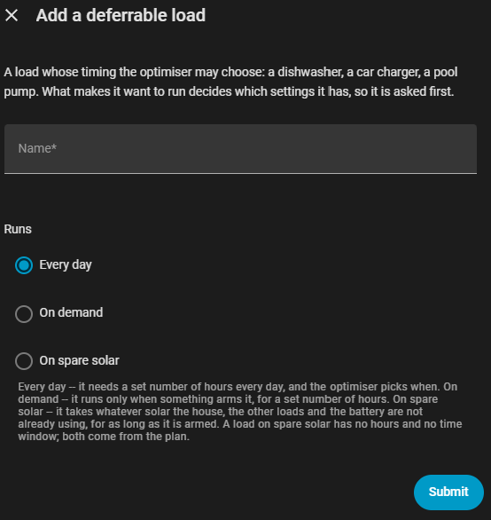
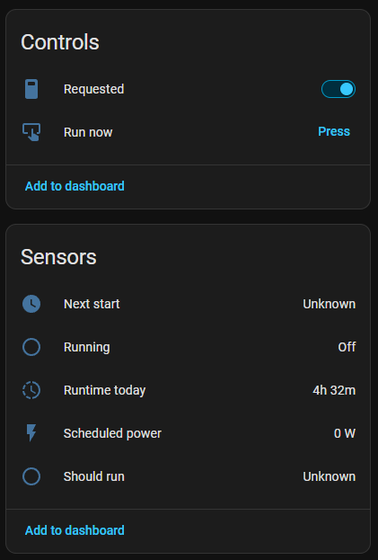
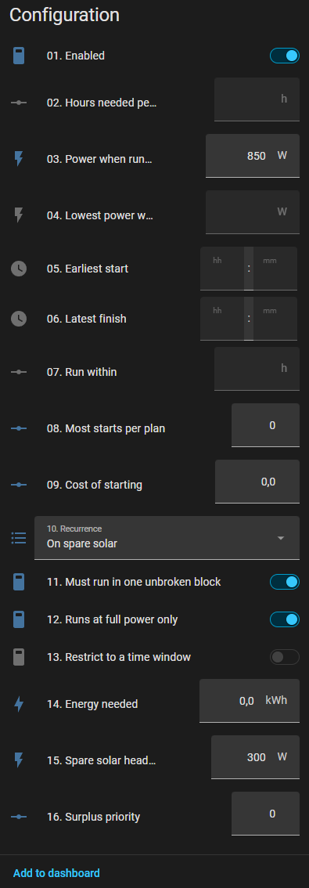
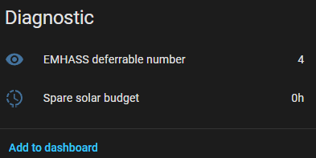

Surplus loads¶
A load that only ever wants energy which would otherwise leave the house.
The motivating case is a pool heater: 800 W, on or off, and worth running only when the sun is producing more than the house and its other deferrable loads need. There is no deadline, no target run time and no "hours per day" — it takes what is spare for as long as it is armed. When it may run is decided without any regard for the battery or the grid — see the add-back for why — but how much it is asked for still leaves room for the battery to reach its own target first; see the battery reservation.
This is a Companion construct, not an EMHASS feature — see why this cannot be an ordinary deferrable load.
Choose On spare solar under Runs when adding the load, then arm it with its Requested switch. Turn the switch off to stop. That is the whole user-facing feature, plus one optional switch — Start as early as possible — for a load you want served at the front of the sun rather than wherever the day suits it best.


Adding a deferrable load asks two questions first — its name and what makes it
want to run — because that answer decides which settings it even has. A config
flow cannot show or hide a field in reaction to another field in the same form,
and a surplus load has no operating hours and no time window to offer. An
existing load can be switched over at any time with its recurrence select.
Why this cannot be an ordinary deferrable load¶
There is no surplus mode in EMHASS. No self-consumption mode either, and no config option, payload field or API endpoint that corresponds to one — nothing in EMHASS's own configuration, the add-on's options, or the upstream docs will match anything on this page, and looking for it there is a dead end. Everything described here is computed by the Companion; what EMHASS is finally sent for a surplus load is a completely ordinary deferrable load with an hours target and a window, indistinguishable from any other.
EMHASS's cost function is imports minus export revenue. It has no value term for consumption at all, so any load it is not forced to run is pure cost and the solver sets it to zero at every timestep. There is no way to express "run this if it happens to be free" in the MILP.
The only lever is def_total_hours, which is a hard constraint. So a surplus
load's run time has to be computed outside the optimiser, from the surplus the
plan itself predicts, and handed back as an ordinary hours target.
How the budget is derived¶
Once per run, in surplus.py, from the previous run's plan:
- The series.
max(0, P_PV - P_load - ordinary deferrables)— PV the house and its ordinary scheduled deferrables don't need, plus the surplus loads' ownP_deferrableadded back (see below). Deliberately not-p_grid: what the battery charges on, or what gets exported, is the optimiser's call about where to put spare PV, not a statement about whether there was any. Reading-p_gridinstead would let the battery silently outrank every surplus load for the same watt, any time it still has room to charge. - The current block. From here to the first stretch that can't even feed the load's run floor — the run floor being its nominal power when it can only be on or off, and its minimum power when it can modulate. A horizon that starts mid-morning also reaches past sunset into tomorrow's sunrise; without this cut, the block would splice today's tail onto tomorrow's, and everything below would be sized against a "day" that is really two days with a night spliced out of the middle.
- Qualifying timesteps, within that block. Those where the surplus is at least the run floor plus headroom — on the gross series, before the battery's own reservation is taken off (see below).
- The window. First to last gross-qualifying timestep in the block,
sent as an absolute
start_at/end_atpair rather than a wall-clock one. - The budget.
hours = credited energy / nominal power, capped at the qualifying span itself. Each net-qualifying timestep's full surplus is credited (not clipped at what the load can draw in that one slot), so a run of strong slots can cover for a few that only just clear the bar — but the total can never ask for more hours than the span physically has room for, which is the cap doing the same job the per-slot clip used to. See the budget cap below.
The load is then sent to EMHASS as a completely ordinary deferrable with those hours and that window. The optimiser still decides when inside it — but only inside it, and Start as early as possible narrows the window until there is no inside left to decide, on the loads where it can. Without the block cut, a window spanning a whole night is still a technically valid window, and EMHASS will place the load at 3 a.m. if that happens to be the cheapest way to fill it — solar never entered its decision, only the (wrongly wide) window did.
The add-back¶
Only ordinary deferrables are subtracted from P_PV - P_load. Every surplus
load's own P_deferrable is left out of the subtraction entirely, which makes
the series invariant to whether those loads are scheduled: a surplus load
that is currently running must not see its own draw counted against next
cycle's budget, or it would switch itself off every time it switched on. An
ordinary deferrable's consumption stays subtracted because it is a real claim
on the house's energy — leaving it out too would promise the same
kilowatt-hour to the pool as well, selling it twice.
The budget cap¶
Each net-qualifying timestep's full surplus is credited toward hours, not
just what the load could draw in that one slot — a 3 kW timestep credits an
800 W pool the full 750 Wh, not 200 Wh. That lets a run of strong slots make
up for a few that only just clear the bar, or for a slot the battery reserved
most of, rather than every single timestep having to individually justify
itself before it counts at all.
The total is then capped at the qualifying span itself: the load can never be
asked to run more hours than the span has timesteps for, because there would
be nowhere left to place the rest — EMHASS would report the whole problem
infeasible rather than just this one load. That cap is deliberately the
tight span (the last qualifying timestep's own interval, one step wide),
not the wider window sent to EMHASS — the window carries an extra step of
padding to absorb rounding in payload.resolve_load_window, and letting the
cap eat into that padding too would ask for a step nobody's surplus actually
backed. A capped variable load's own ceiling (see below) is subject to the
same cap, sized against nominal_w rather than against energy directly —
exact for a semi-continuous load, an accepted approximation for one that
modulates.
On an abundant day this converges on "run for the whole window" — a small
number of weak or reserved slots inside an otherwise strong block no longer
shrink hours at all, they just get absorbed by it. On a thin day it still
falls back to something close to the old per-slot count, because there is
no surplus elsewhere in the span to borrow from.
Start as early as possible¶
Off by default. On, the load takes the front of the sunny stretch instead of leaving EMHASS free to place its hours anywhere inside it.
It changes the window and nothing else — not the hours, not the energy, not which timesteps were credited. The budget is already "however much the surplus supports"; all this decides is where in the block those hours land.
The modulation margin¶
The slack the switch closes is the gap between hours and the span they were
derived from — and an uncapped budget has none. The target handed to EMHASS is
energy_wh = hours * nominal_w
hours = min(credit_wh / nominal_w, span_hours, max_energy_wh / nominal_w)
while what the block can actually put into this load is Σ draw · step, where
draw is min(net, nominal_w) for a modulating load and nominal_w for a
full-power-only one. Narrowing requires energy_wh to be below that total —
otherwise the earliest window that covers the target is the last qualifying
timestep, which is the whole block. And two of the three terms can never get
there:
credit_wh=Σ net · stepover the same qualifying slots, so it is always at or above the deliverable total.span_hours * nominal_wis at least(qualifying slots) * nominal_w * step, which is also at or above it.
Which leaves max_energy_wh, unrelated to the block and so the one term that
can sit under it. Before the margin existed, that made the switch a complete
no-op on any load without an Energy needed cap: the ask was the block, the
only window covering the block was the block, and the clamp handed back exactly
the window it was meant to narrow. Two things that look like they would open a
gap and do not: the battery reservation and weak or sub-threshold
timesteps — both shrink the ask and the deliverable by the same amount.
So a start-asap run gives up a slice of the surplus to buy the gap:
margin = clamp(1 / run_steps, 5%, 25%)
hours *= 1 - margin
Scaled by the run length because the margin has to absorb the difference between a slot's forecast surplus and its real one, and a short run averages fewer slots — so one bad slot moves it further. A four-step run gives up a quarter; a twenty-step run a twentieth.
The margin is only charged when it actually buys a shorter window. The window is computed twice — once for the full ask, once for the derated one — and the margin is kept only if the second is strictly narrower. Otherwise the full ask stands.
That check is doing real work, not guarding a corner case. Whether a margin buys anything is a property of the block's shape: it removes energy from the ask, but if the tail slots the run stops needing are the weakest ones, the covering slot barely moves and the single slack step puts it straight back. Measured on a real 13-slot block, a 10% margin gave up 1.36 kWh for exactly zero timesteps. The cheaper test — "is there placement freedom in principle", comparing the run length against the qualifying slot count — does not catch that, because the freedom exists and derating still cannot reach it.
An Energy needed cap is never derated, either. It already sits below what
the block delivers, which is the gap the margin exists to manufacture, and
delivering less of a number the user typed would be a different feature. The
test is cap_hours < hours_from_block, checked before derating rather than
clamping to the cap afterwards — that ordering matters for a cap landing
inside the margin. 9.5 h of cap against a 10 h block and a 25% margin would
otherwise come out as 7.5 h, a full hour short, and only in that narrow band.
Together these mean the margin does nothing on a flat block — where
credit_wh / peak is exactly the slot count, so the run fills the block by
construction — and most on a peaked or declining one whose weak tail
contributes little to credit_wh.
Whenever hours genuinely is short of the span, EMHASS picks where they go —
and its cost function has no reason to prefer early. On flat prices, which
end of the block a thin day's run lands on comes down to solver tie-break, not
to anything about the sun. With the switch on, the window is pulled in to the
earliest stretch that can still deliver the budget, leaving as little room to
drift late as the day allows.
How wide is "as early as possible"¶
Not simply the hours asked for. The power ceiling handed to EMHASS is the block's peak surplus, and the front of a block is its weakest end — so a window clamped to the bare hours would ask a load to hold midday power through morning slots that never offered it. EMHASS treats the energy total as an equality, so it has no choice but to import the difference.
The fix is width rather than a lower ceiling. EMHASS pays the buy price for imports and gives up the sell price on exports, so the cost of one more watt in a timestep steps up sharply the moment that timestep stops exporting. That kink is what makes the solver modulate — spreading a run down the morning ramp and tracking the surplus curve, rather than running flat out in the fewest possible slots. It can only spread into window it has been given.
So the window grows until the surplus inside it actually covers the energy being asked for, and stops one timestep past the first slot where it does — the covering slot is the first whose cumulative surplus clears the target, so the run may need part of the next one.
Deliberately one step, and not scaled with the run. Adding room proportional to the run's length is the obvious thing to reach for — "a longer run needs more space to shape itself in" — but it double-counts the margin and loses to it. The margin is the shaping room: an ask a few per cent under what the window supplies leaves that few per cent as slack spread across every slot, which is exactly the freedom the solver needs to track the surplus curve. Measured on a real 24-slot block, a proportional slack of a quarter of the run added four timesteps back while a 6% margin removed three — the two together narrowed nothing, and the switch stayed the no-op it had always been.
That keeps the window the earliest one that can deliver the budget without importing, and it stays self-tightening: a window that only just covers the target leaves little room to drift late with. On a block flat enough that every timestep can deliver the ceiling, the cover is reached at exactly the hours asked for and nothing is widened at all.
What it does in practice¶
Measured against a real plan — a car on a 24-slot afternoon block, ceiling clipped to the 6188 W peak, no Energy needed cap:
| window | slots | run | asked | |
|---|---|---|---|---|
| switch off | 11:00–17:15 | 26 | 16 | 24.55 kWh |
| switch on, before the margin | 11:00–17:15 | 26 | 16 | 24.55 kWh |
| switch on, with the margin | 11:00–16:45 | 24 | 15 | 23.02 kWh |
Two timesteps of placement freedom removed for 1.53 kWh of surplus given up. The same car later the same afternoon, on a 14-slot block whose ceiling had dropped to 5683 W — a shorter run, so a larger margin:
| window | slots | run | asked | |
|---|---|---|---|---|
| switch off | 12:00–18:15 | 26 | 8 | 10.01 kWh |
| switch on (12.5% margin, 1/8) | 12:00–17:15 | 22 | 7 | 8.75 kWh |
Four timesteps for 1.25 kWh. Raising the margin trades more sun for more of the day, and on the morning block it was close to linear:
| margin | window | slots | asked | given up |
|---|---|---|---|---|
| 6.25% (default at 16 steps) | 11:00–16:45 | 24 | 23.02 kWh | 1.53 kWh |
| 10% | 11:00–16:30 | 23 | 22.09 kWh | 2.45 kWh |
| 15% | 11:00–16:00 | 21 | 20.87 kWh | 3.68 kWh |
| 20% | 11:00–15:30 | 19 | 19.64 kWh | 4.91 kWh |
| 25% | 11:00–15:15 | 18 | 18.41 kWh | 6.14 kWh |
The clamps on modulation_margin are where to change that trade, and the shape
of the day decides how much a given margin buys: a block whose sun tails off
loses several timesteps to a small margin, a flat one loses none to any margin.
It is still usually the worse choice for self-consumption, and that is the point of leaving it off by default. Widening buys the run somewhere to spread, but it cannot conjure sun that isn't up yet: a car asked for 20 kWh at first light will still be started into a morning that cannot fill it, where EMHASS left alone would have waited for midday. Turn it on when you want the energy early more than you want it cheap — a car leaving at noon, or a forecast you don't trust — not as a general improvement.
A widened window is logged at debug level, naming the load and how many timesteps it grew by; a run that starts later than expected on a peaked day is usually this. It is also how to confirm the uncapped case above — a line widening the window back to the full block, run after run, means the switch is doing nothing:
01KZF7RZDVQXFMCGJD9ZFNBT74: start-as-early-as-possible window widened from 21
to 38 timesteps -- the front of the block cannot deliver 36607 Wh at 7022 W
without importing
This is also why Run now is unavailable on a surplus load. That button
forces the load on regardless of the plan, which here means charging off the
grid at midnight, and it clears itself against an operating_hours a surplus
load structurally does not have — so once pressed it stayed on until Home
Assistant was restarted. This switch is the honest version of the same intent.
The load is still surplus-gated throughout: the window can never open before the first qualifying timestep, so "as early as possible" means early within the sun, never before it. And because the whole budget is rebuilt from scratch every cycle, a run cut short by cloud is not a request spent — a later cycle simply derives a fresh window from whatever sun is left.
The battery reservation¶
The window is gross, but the hours asked for are net of one more thing: what
the battery's own charging already claims from the same slot, read straight
from the previous plan's P_batt (battery_reserved_series in surplus.py).
That plan was solved honouring battery_target_state_of_charge already — SOC,
timing, price, efficiency, all of it — so reusing its own charging schedule is
both simpler and more faithful than re-deriving "energy still needed to reach
70 %" from SOC and capacity here and risking it disagreeing with what EMHASS
actually intends to do.
This narrows hours, never the window: a slot the battery is charging hard on
is still gross-qualifying, so it still counts towards when the load may run,
it just may contribute little or nothing towards how much. Keeping the two
separate is what stops this turning back into the -p_grid bug — a battery
that is still short of its target must not be able to push the load's start
out, only to leave it fewer hours once it's running.
Sharing among multiple surplus loads (priority order, see above) still comes out of what is left after the reservation: the battery's claim is taken off the top before the highest-priority surplus load even sees the series.
A currently-running unbroken load whose window moved on¶
Must run in one unbroken block (single_constant) and the surplus window
interact badly if left alone. EMHASS pins a currently-on single-constant load
to run from t=0 for its full requested duration and widens the window mask to
fit — an unbroken block can't be split, so it just lets an in-progress one run
to completion rather than interrupt it. That is correct when the window still
covers now: the pin is simply continuing the block that opened it. It is wrong
when the block that justified starting has ended and the window has moved to
a later, unrelated one (this page's motivating case: dishwasher claims the
last of today's sun, and the next real block is tomorrow) — the pin would
still fire, off the new block's fresh multi-hour total, starting immediately
on grid or battery power the load was never meant to draw.
Because a surplus load always reports zero completed timesteps (see below), there is no "remaining" figure for EMHASS's own progress tracking to release it with, either — every cycle re-pins a full fresh block, so left alone this does not merely run once, it can keep re-arming indefinitely.
The fix is in payload._describe: when a load is both current_state (really
running) and single_constant, and its freshly-resolved window's start index
is past zero, its hours are sent as 0 for that request instead of the later
block's total. With no operating requirement, EMHASS has nothing to pin and is
free to plan the load off starting now. The later block is asked for normally
on its own cycle, once "now" actually reaches it and current_state has had
the chance to catch up. A load that has not started yet is unaffected — its
future window is the ordinary, correct way to ask for it — and so is a
non-single-constant load, which only ever gets a one-timestep force-on from
EMHASS's current-power pin, not a multi-hour one.
Why the previous plan¶
This is a lagged single pass. Solving twice per cycle — once to find the surplus, once with the load in it — would feed the second solve's output back into its own input, and the budget would oscillate between runs. Using the last plan costs one MPC interval of lag on a load that heats a swimming pool, and the whole budget is recomputed from scratch every cycle, so an error corrects itself immediately.
Before the first optimisation after a restart there is no plan, so the budget is empty and the load is parked. It picks up on the next run.
Why no completed timesteps¶
def_current_operating_timesteps is sent as zero for a surplus load.
The budget is derived from the forward surplus, which shrinks on its own as the day's sunny timesteps fall behind the horizon — so the hours being sent are already "what is left". Letting EMHASS subtract completed timesteps as well double-counts every hour served: a pool two hours into a four-hour surplus would be told it needs two more hours and has already done two, and would stop at noon with half the sun still ahead of it.
def_current_state is still sent, so a running load is not charged a startup
penalty twice.
Settings¶

Greyed-out fields above are the ones a surplus load has taken over — see the table below for exactly which.
| Setting | Surplus load |
|---|---|
| Power when running | configured — the load's rating, and its run floor when on/off |
| Runs at full power only | configured |
| Lowest power while running | configured, when the above is off |
| Cost of starting | configured |
| Energy needed | configured — optional cap, 0 for none |
| Spare solar headroom | configured |
| Surplus priority | configured — only matters with more than one surplus load |
| Hours needed per day | derived |
| Restrict to a time window | derived |
| Run within | not applicable |
The two power settings are the same pair every deferrable load has, and they interact the same way: with Runs at full power only on, the load is either off or at its nominal power, and Lowest power while running is not read.
They also decide what nominal_w the budget is divided by (see
the budget cap above), which is easy to get wrong:
- Full power only — the load draws exactly its nominal power whenever it
runs, so
hoursis credited energy divided by that fixed figure, capped at the qualifying span. A timestep offering 3 kW still only ever draws the pool's 800 W once it's actually running — the 3 kW is credit towards how many hours it may run, not power it will actually pull in that one slot. - Variable — the same division and cap, but against a ceiling that adapts to the day (below) rather than a fixed one.
The ceiling EMHASS is given for the run is not always the configured
nominal power, either. It is clamped down to the best surplus actually seen
in a qualifying slot this run — so an 11 kW charger on a 3 kW day is sent as
a 3 kW load, not an 11 kW one. Without that clamp, hours is computed
against a ceiling the day cannot reach, which understates the hours needed
and leaves EMHASS free to run near the unreachable ceiling for a short
burst instead of at the achievable power for the whole window — importing
the difference either way. The configured value is still a hard cap in the
other direction: the clamp only ever pulls the ceiling down, never raises
it past what the appliance can actually take. A full-power-only load has no
ceiling to clamp — it is always either off or at its configured power.
Headroom¶
The margin a timestep must clear above the load's own draw before it counts.
Its main job is absorbing PV forecast error: a slot counted at exactly the load's power imports the moment the forecast comes in light. It also opens a band — between the load's power and the load's power plus the headroom — of timesteps that do not add to the budget but are still safe to run through, because the load's draw still fits inside the surplus there.
That band is why Cost of starting is the right way to keep an on/off load from short-cycling, rather than Must run in one unbroken block. A startup penalty prices each start, so EMHASS runs one contiguous block on a clear day (splitting costs the penalty and buys nothing) and splits across two peaks on a broken-cloud day (straddling the gap costs more than the penalty). One unbroken block is a hard constraint, and on a day with a deep midday gap it will drive the load through that gap and import to satisfy itself.
Energy needed¶
A total, not a rate: "put 20 kWh in the car and stop". Zero means no cap, which is the pool's case and the default.
Progress is tracked locally against the current request and subtracted from the cap; it is never sent to EMHASS (see above). When the cap is met the request disarms itself. Without a cap the load stays armed until the switch is turned off — a temperature limit is then an automation that turns the switch off, not a feature of the load.
The cap is exact for a full-power load, where delivered energy is runtime times nominal power. For a variable-power load it over-states delivery whenever the load modulates below nominal, so the cap is reached early and the load stops short rather than over-running.
Several surplus loads¶
They share one series, allocated by Surplus priority (lower claims the series first, ties broken by name), with each load's draw subtracted from what the next one sees.
Without that every surplus load reads the same number, all of them are told the whole surplus is theirs, and running two together imports the difference. The optimiser cannot arbitrate it, because none of these loads is in the plan the budget was derived from.
Priority only matters once there are two or more surplus loads competing for the same series — with a single one there is nothing to be first ahead of. Every load defaults to the same priority, so nothing changes until you set one lower than another's — a car charger given a lower number than a pool, say, takes what it needs first and leaves the pool whatever surplus is left.
What is published¶
On the hub device:
sensor.…_solar_surplus— spare solar now, with the whole series inforecastand the reporting window in the attributessensor.…_solar_surplus_energy— kWh still ahead in the horizon. Usually the more useful trigger: whether to start heating a pool is a question about kilowatt-hours coming, not watts at this instantsensor.…_solar_surplus_start/_end— the reporting window's endsbinary_sensor.…_solar_surplus— above the reporting threshold nownumber.…_surplus_threshold— what those four call a surplus
That threshold is reporting only. No load budgets against it: a load's own threshold is its run floor plus its own headroom, because "is there enough spare sun for the pool" and "…for the car" are different questions.
The two "now" entities read unknown, never zero, when there is no plan
covering this moment — a made-up zero is indistinguishable from a real "the sun
has gone in", and anything you gate on it would switch off on the strength of a
missing reading. A numeric-state trigger ignores unknown, so this is usually
what you want. Note that a new plan's horizon starts at the next timestep
boundary, leaving the minutes since the run finished uncovered; the last reading
of the outgoing plan is carried across that seam, so it is not a source of
unknown in normal running.
Per load, sensor.<load>_surplus_budget reports the hours the last run was
allowed to ask for, with the window, the energy, the qualifying threshold and
any remaining cap as attributes. A load that is not running is either short of
surplus, short of headroom, or was beaten to it by a higher-priority load, and
those look identical from the outside without it.

Also diagnostic: sensor.<load>_emhass_deferrable_number — see
on-demand loads for
why it stays stable.
What this is not¶
Exported power is worth the sell price, so consuming it here forgoes that revenue — it is not free energy, it is simply the only energy no other part of the plan has already claimed. On a tariff where selling pays more than the load is worth to you, a surplus load is a bad trade, and nothing here will notice.